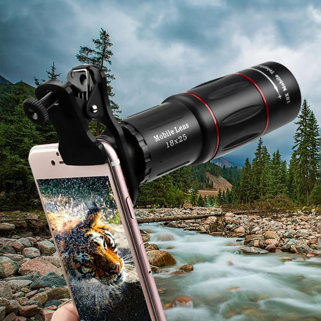
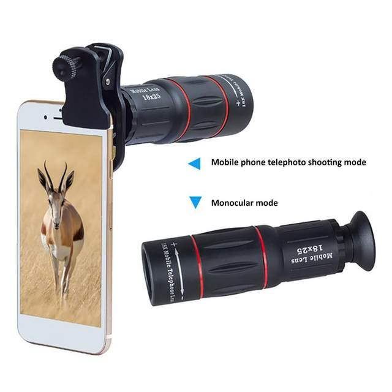
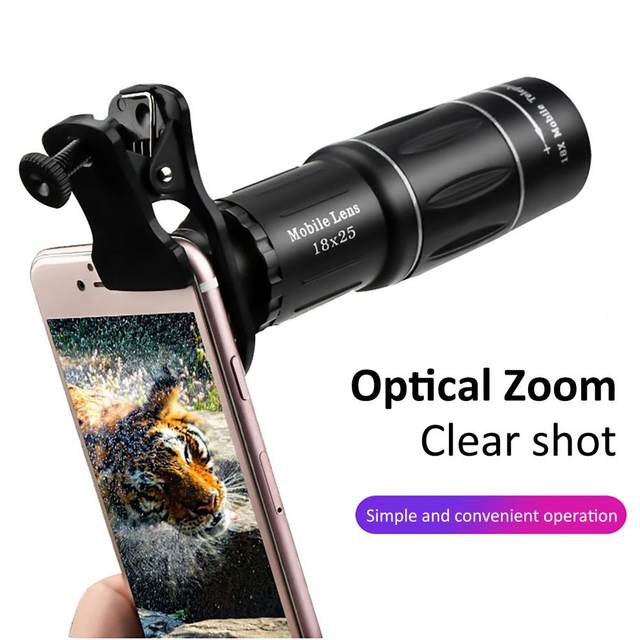
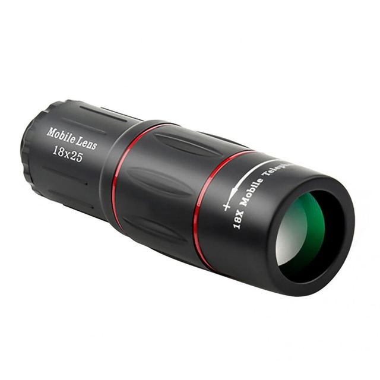
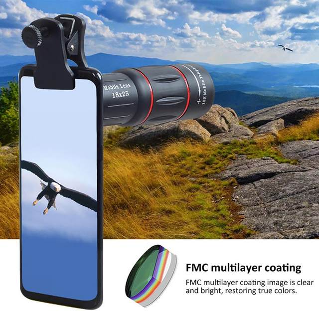
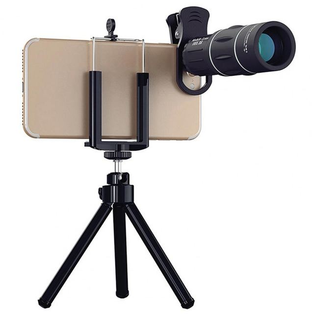

• 18 Times Zoom :Capture distant objects with ease using the 18 times zoom feature of this telephoto lens.
• Universal Compatibility :This telephoto lens is compatible with all mobile phone brands, making it a versatile accessory for any user.
• Easy to Use :With its simple design, this telephoto lens is easy to attach and use, even for beginners.
• High-Quality Images :The high-quality images captured by this telephoto lens ensure that you won't miss any detail from a distance.
Product description
Features:
1. Magnification: 18 times
2. Eyepiece: ED lens
3. Appearance material: plastic steel
4. Prism: BAK4
5. Exit pupil diameter: 2.4mm
6. Objective lens coating: full broadband multi-layer coating
7. Exit pupil distance: 7.7mm
8. Field of view: 8.8°
Specifications:
1. Small and lightweight
2. Sturdy and durable
3. Screen HD
4. Large focusing wheel design
5. Multi-scenario application
Package Included:
1*Lens





